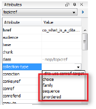

The @collection-type attribute
The @collection-type attribute defines how automatic links are generated, as they define the type of hierarchical relationship between members of the same branch of a ditamap tree or in the same cell in the relationship table <relcell> element. You can apply the @collection-type attribute to:
You can set the values of the @collection-type attribute to one of the four following values:

Value of @collection-type attribute |
Description |
|
choice
|
Not commonly used, but it is intended for situations where the reader needs to select one child topic to proceed. This may be useful when the output document is an interactive decision-support application. Most processors treat choice in the same way as unordered. |
|
family
|
Links are generated from parent to children, from children to parent, and from sibling to sibling. |
|
sequence
|
Links are generated from parent to children, from children to parent, and from child to previous sibling (if applicable) and next sibling (if applicable). It creates a numbered sequence. |
|
unordered
|
Links are generated from parent to children, and from children to parent. These links can be completed in any order. |
The following table can help you decide which type is most appropriate for your situation:
| Question |
Value |
| Should the nested task topics be completed in a particular order? |
sequence
|
| Do the topics represent choices? |
choice or family
|
| Can the task topics be done in any order? |
unordered or family
|
| Are the topics closely related and need links between sibling topics? |
family
|
Applied to relationship tables
By default, topics or resources that are referenced in the same cell of a relationship table are not related to each other, unless you change the @collection-type attribute of the <relcell> to indicate that they are related.
Although @collection-type attributes are valid in relationship table <relcell> elements, some don’t make a lot of sense in that context. For example, if you set a @collection-type attribute in a relationship table cell to sequence, it will result in a Next Topic link in the output linking to the next topic referenced in the cell, rather than to the next topic in the TOC sequence (as may logically be expected by the reader).